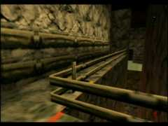
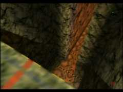
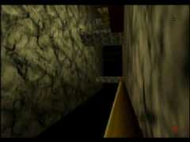
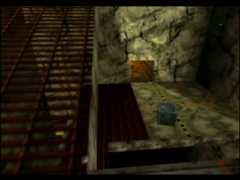
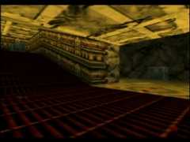

|
| Perfect
Dark : Ravins |
| Un
Niveau ou on trotte pas mal, et où les Points de reperes sont
quasiment inexistants. Le Plan est pourtant simple, mais ce Niveau
se revele finalement assez dur. Il se compose de Grandes Allées
plus ou moins fines, et de diverses Salles assez larges pour la plupart.
Pas mal d'escaliers, un Tuyau (comme dans le Niveau du même
nom) et un Gros Rocher Volant faisant office d'Ascenseur. Quelques
Caisses trainent par-ci par-là, histoires de remplir le Décor... |
 |
 |
 |
Le Décor est pas mal, ni beau ni franchement laid. En fait ce qui me chiffonne, c'est ce Coté Carré. Je m'explique. Prenons le Niveau Caves de Goldeneye. On est censé etre dans une grotte, et le Niveau s'en ressent : Cavités, Tunnels, tout semble taillé dans la Roche et on se prend vraiment à déambuler dans une Grotte ! Alors que là çà ressemble à tout sauf à un Ravin ! Meme si ce n'est qu'un Nom ! |
 |
 |
 |
En fait j'ai l'impression que nos petits Gars de chez Rare on fait un Niveau, et qu'au moment de mettre une Texture ils ont mis cette Fausse Roche histoire de varier les Plaisirs. Mais ça fait faux ! C'est trop finement taillé ! Regardez-moi donc ce plan taillé au peigne fin ! |
 |
 |
 |
Mis à part ce Coup de Gueule, quelques Eléments rehaussent le Niveau comme ces Sols en Treillis Métaliques, ce Tuyau, quelques éclairages... Rien à dire sur les Simulants. Toutes les Armes se valent, mis à part peut-etre les Roquettes qui sont un peu trop lentes pour des Endroits aussi vastes. Le Slayer peut etre agréable pour aller chercher un Ennemi situé trop loin. Le Farsight XR-20 est l'Arme Absolue pour ce Niveau car c'est celle qui va le plus loin ! |
 |
 |
 |
Le Campeur a un Vide. Les Salles sont bien trop grandes, les Couloirs égalemment, et il n'y a finalemment aucun endroit ou on peut etre tranquille !! |